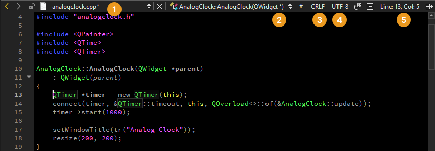
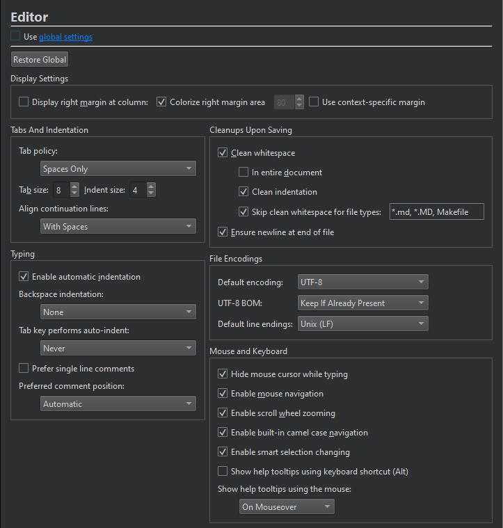

Select line ending style
To switch between Windows line endings (CRLF) and Unix line endings (LF), select the ending style on the editor toolbar (3) in the Edit mode.

To hide this field, go to Preferences > Text Editor > Display, and clear Display file line ending.
Set default style
To set the line endings to use for all projects by default, go to Preferences > Text Editor > Behavior and select the ending style in Default line endings.

To set the line endings to use for a project, go to Projects > Project Settings > Editor.

See also How To: Edit Code, Specify editor settings, and Edit Mode.